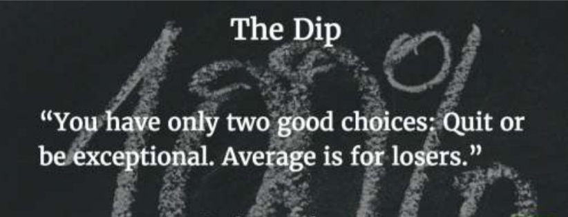

The Dip
Title: The Dip
Author:Seth Godin
Type: Non-fiction
Published in: 2007
Number of copies sold:~100,000+ copies
Curious fact: Seth was one of the few people with very early
access to the
internet (when a 24-hour line still cost $400/month), and has been
blogging ever
since. He’s published something every day for nearly 20 years,
initially sending
his ideas out via email, then moving to Blogger, Google’s blogging
platform. To
date, over 6,000 (!) blog posts are on his site, which attracts
millions of readers
every month, and is often regarded as the #1 marketing blog in the
world.
Finding it is easy. Just type ‘Seth’ into Google.
Best quote from the book:
You have only two good choices: Quit or be exceptional. Average is for
losers.
Summary: This is a book about choices. Two choices, really.
It’s about the decision between quitting, or trying to be the best in
the world. It starts with introducing you to the idea that being the
best in the world is very underrated. On any top 10 list, number one
gets far more than just its fair share of 10% (for example, the top
result in Google gets ~40% of all clicks).
But isn’t it almost impossible to become the best in the world today?
No, because according to Seth, both “the world” and “best” are two
very flexible terms and highly depend on what you do. He uses a few
graphs and curves to explain when it’s time to make one of the two
choices, and underlines them with several examples so you can get a
better grip of which one to make when it’s your turn (and it’s always
your turn). The book ends with a series of questions to help you
figure out which dip to pursue, and which dead ends it’s time to quit.

Why is it such a motivational book?
This book has had the biggest impact on me all year. It tells you that
it’s okay to quit, that it’s actually important to do so, which makes
this an unbelievably liberating book. All of a
sudden, you won’t feel compelled to keep up with the digital and
physical Joneses in your life, whether it’s that extra Twitter account
that pulls at your attention, or the vain chase for the next promotion
at a company you’ll never lead.
The Dip is
a call to greatness in a world of mediocrity. But
greatness always entails sacrifice. Luckily, this book also gives you
the courage and confidence to happily make those sacrifices, figure
out your true mission, smile and return to work that matters.